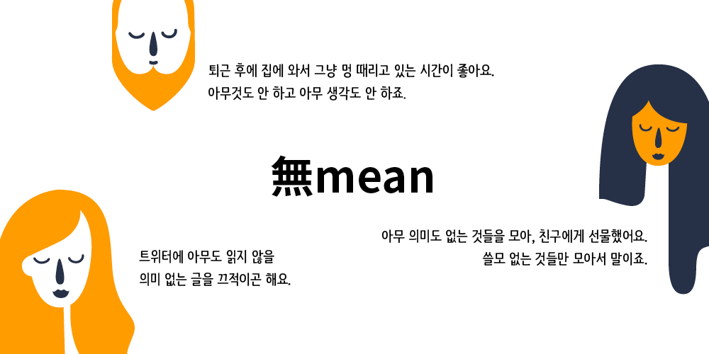
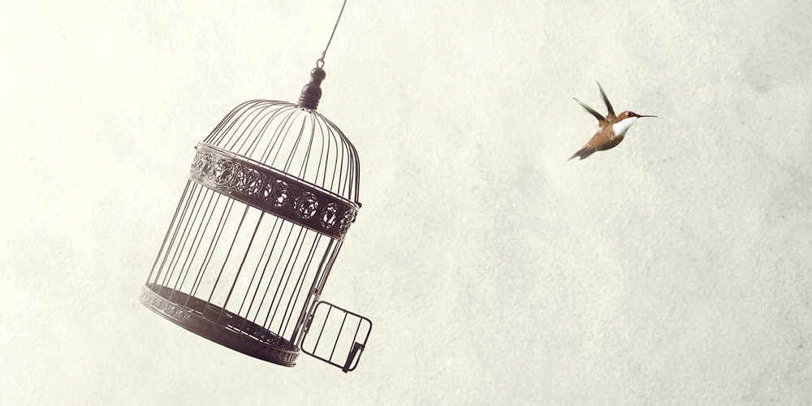
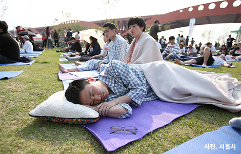
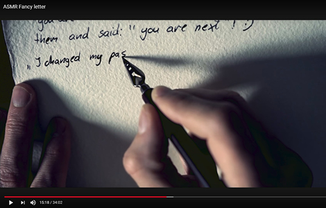

넋을 놓고 멍을 때리거나 바람 소리, 글씨 쓰는 소리에 귀 기울이는 즐거움을 아시나요? 무의미한 것을 통해 유의미함을 찾는 무민이 바쁜 일상에서 벗어나는 새로운 탈출구이자 안식처로 떠올랐습니다.
넋을 놓고 멍을 때리거나 바람 소리, 글씨 쓰는 소리에 귀 기울이는 즐거움을 아시나요?
무의미한 것을 통해 유의미함을 찾는 무민이 바쁜 일상에서 벗어나는
새로운 탈출구이자 안식처로 떠올랐습니다.
꼭 의미가 있어야 하는가 – 무민 세대가 말하다
꼭 의미가 있어야 하는가 – 무민 세대가 말하다
얼마 전부터 페이스북, 인스타그램 같은 SNS에, 인터넷 뉴스 상에 무민(無Mean)이라는 말이 종종 등장하고 있습니다. 요즘 인터넷을 사용하는 성인남녀 10명 중 4명이 스스로를 ‘무민 세대’라고 생각한다는 모 기업의 설문 조사 결과도 함께 제시하면서 말이죠. 그런데 대체 ‘무민’ 은 무엇을 뜻하는 것일까요? ‘무민’은 ‘없다’는 뜻의 한자어 무(無)와 ‘의미’를 뜻하는 영어 민(Mean)이 합쳐져서 만들어진 젊은이들의 신조어로, 말 그대로 ‘의미 없음’을 의미한다고 합니다. 그렇다면 ‘무민 세대’ 란 ‘의미 없음을 추구하는 세대, 의미 없음을 받아들이는 세대’ 정도로 풀이될까요.
자칭 무민 세대라는 젊은이들은 의미를 내려놓은 표정으로 담담하게 말합니다.

의미의 중요성을 역설한 빅터 프랭클의 베스트셀러『삶의 의미를 찾아서』를 논하지 않더라도, 우리는 늘 의미 찾기가 얼마나 중요한지 의식하면서 살아왔습니다. 의미는 죽음 앞에 허무한 인간의 삶에 생기를 부여했고, 우리가 어디로 가야 할지 알려주곤 했습니다. 하지만 젊은이들은 이제 의미 찾기의 의미를 거부하며, 의미 없음의 삶 또한 괜찮다고 주장하고 있습니다. 의미 없음을 있는 그대로 삶에 가져오면서 말이지요. 자신이 무민 세대임을 자처하는 이들이 많아진 시대, ‘무민’이 사회 속 하나의 트렌드로 등장한 현상을 어떻게 받아들여야 할까요.
성공 강박증에서 탈출해 외치다. “의미 없어도 괜찮아”
성공 강박증에서 탈출해 외치다. “의미 없어도 괜찮아”
이런 현상에는 어찌 보면 성공에 대한 강박에서 탈출하고 싶은, 젊은 세대의 소망이 들어있지 않을까 하는 생각이 듭니다. 공부가 힘들던 청소년기엔 어른들 말처럼 대학만 들어가면 괜찮아질 거라 생각했지만, 곧 어른들의 달콤한 거짓말이었음을 깨닫고 맙니다. 취업난 속에 불안과 친구 하며 강박증에 걸려 살아가지만, 아등바등 노력해도 ‘무쓸모’인 잉여인간이 되어 있음을 알아차릴 때, 그 아픔 또한 강렬합니다. 언젠가 중요한 어른이 되어 괜찮은 삶을 살 것이라 믿었던 어린 시절의 꿈에 비추어 볼 때, ‘의미 없는 사람’ 이 되어 의미 없는 삶을 살고 있는 현재를 알아차린다는 것, 영 씁쓸한 일이 아닙니다.
그래서 자신의 볼품없음에 초라해지고, 스스로를 자책하려고 할 때 반문해볼 수 있겠습니다. 꼭 성공해야만 하는가? 꼭 의미 있는 삶을 살아야만 하는가? 무엇을 할 때, 의미가 있어야만 하는가? ‘뭔가를 향해 가야 한다. 의미를 찾아야 한다’는 마음을 그저 내려놓고 아무 생각 없이, 아무 뜻 없이 있으면 안 되는 걸까? 매사에 의미를 찾겠다는 마음을 내려놓으면 어떻게 될까요? 대체 무슨 일이 벌어질까요. ‘무민 세대’의 등장은 이런 의문에 바탕을 두고 있지 않나 합니다.

그 누군가는 취업난, 높은 실업률, 고공 행진하는 물가, 치솟는 집값… 하루 살아가기도 팍팍한 현실 속에서 자포자기해버린 마음, 젊은이들의 자조 섞인 마음이 드러난 현상이라고도 말합니다. 하지만 임상심리학자로 많은 이들의 상처받은 영혼을 어루만지며 살아가는 저로선, 무민 세대의 모습 속에서 자기 치유의 지혜를 발견합니다. 나 자신을 있는 그대로 받아들이기, 생각의 늪에 빠져 허우적거리기를 멈추기, 현재에 존재하면서 단순해지기, 강박에 시달리는 나를 바라보며 따뜻하게 수용하기, 하루 종일 멍 때리며 쉬고 있는 자신에게 괜찮다고 해주기… 어찌 보면 잠시도 쉴 수 없이 바삐 살고 있는 현대인에게 너무도 필요한 것이 ‘무민’ 아닐까 하는 생각이 드는 것입니다.
오늘도 많은 일거리들을 쌓아놓고 걱정의 늪에 빠져 있으시다면, 잠시 내려놓고 ‘무민’ 해보면 어떨까요. 아무 생각 없이, 어떤 뜻도 없이 호흡에 집중하면서 말입니다. 무엇이 되지 않아도 괜찮고, 당신의 오늘 하루, 의미 없어도 괜찮으니 말이지요.
무민(無Mean) 하는 3가지 방법
무민(無Mean) 하는 3가지 방법
하나, 멍 때리기 대회 참가하기
2014년 예술가 웁쓰양에 의해 서울광장에서 처음 개최된 멍 때리기 대회는 “과연 아무것도 하지 않는 것은 시간낭비인가”하는 질문을 던지는 참여형 퍼포먼스로 시작되었습니다. 실제 참가자들은 3시간 동안 휴대전화 확인, 졸거나 잠자기, 잡담 나누기, 독서 등을 금지당하며, 아무것도 하지 않는 상태를 누가 오래도록 유지하는지를 겨룹니다. 현대인의 뇌를 쉬게 한다는 대회의 목적처럼 강제적이지만 휴식을 얻을 수 있다는 점에서 대한민국을 넘어 세계에서도 큰 관심을 끌고 있습니다. 잠깐의 시간에도 스마트폰을 손에서 놓지 못하고 있다면, 멍 때리기 대회에서 무민을 연습해보는 것은 어떨까요?
2018년 멍 때리기 대회
일시: 4월 22일(일) 장소: 여의도한강공원 너른들판
홈페이지www.spaceoutcompetition.com 페이스북 계정 @INT.spaceout.competition


둘, ASMR 영상 감상하기
자율감각 쾌락반응을 뜻하는 ASMR(Autonomous Sensory Meridian Response)은 뇌를 자극함으로써 심리적 안정을 유도하는 것을 말합니다. 바람 부는 소리, 연필로 글씨 쓰는 소리, 바스락거리는 소리 등을 담아낸 ASMR 영상은 일상에서 무심코 지나치는 무의미한 행동 또는 소음을 반복해서 보여줌으로써 바쁜 현대인의 마음을 차분하게 만들어준다고 해요. 편안한 수면을 도와준다고 알려져 불면증을 앓거나 쉽게 잠들지 못하는 이들이 많이 활용하는 데, 지나치게 의지하게 될 경우 ASMR 없이는 잠들지 못하는 부작용이 있을 수 있으니 유의하세요.
자율감각 쾌락반응을 뜻하는 ASMR(Autonomous Sensory Meridian Response)은 뇌를 자극함으로써 심리적 안정을 유도하는 것을 말합니다. 바람 부는 소리, 연필로 글씨 쓰는 소리, 바스락거리는 소리 등을 담아낸 ASMR 영상은 일상에서 무심코 지나치는 무의미한 행동 또는 소음을 반복해서 보여줌으로써 바쁜 현대인의 마음을 차분하게 만들어준다고 해요. 편안한 수면을 도와준다고 알려져 불면증을 앓거나 쉽게 잠들지 못하는 이들이 많이 활용하는 데, 지나치게 의지하게 될 경우 ASMR 없이는 잠들지 못하는 부작용이 있을 수 있으니 유의하세요.
ASMR 영상이 시각과 청각을 자극한다면, ASMR 장난감은 촉각에 주로 영향을 미칩니다. 한 가지 특징이 있다면, 안티 스트레스를 위한 여가 생활로 각광받은 컬러링북, 페이퍼커팅아트, 필사 등이 하나의 작품을 완성하는 것에 초점을 두는 것과 달리 ASMR 장난감은 손을 움직이는 행위 그 자체를 목적으로 합니다. 마치 학창 시절 찰흙놀이를 하듯 액체 장난감을 주물럭거린다든지 볼펜을 반복해서 달칵거리듯 버튼을 누른다든지 하는 것이 바로 그렇습니다. TV나 스마트폰을 보면서도 손이 심심하다고 느끼는 사람, 손을 움직일 때 마음이 편안해지는 사람에게 ASMR 장난감을 추천합니다!
- 마음대로 주무르는 액체 장난감 ‘슬라임’
- 실리콘이나 고무 재질로 된 ‘스트레스볼’
- 손가락으로 빠르게 회전시키는 ‘피젯 스피너’
- 다양한 버튼을 계속해서 누르는 ‘피젯 큐브’